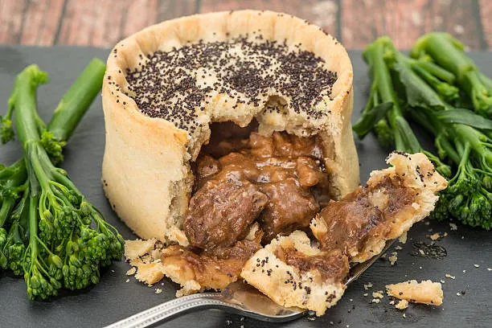

Steak and Ale Pie

Description
Steak and ale pie is a classic British dish that combines tender pieces of beef with a rich and flavorful ale gravy.
The filling is encased in a flaky pastry crust and baked until golden brown.
This hearty and comforting pie is perfect for a cozy dinner on a cold night.
Ingredients
- 2 pounds beef chuck, cut into 1-inch cubes
- 2 tablespoons vegetable oil
- 1 onion, chopped
- 2 cloves garlic, minced
- 2 tablespoons all-purpose flour
- 1 cup beef broth
- 1 cup ale
- 1 tablespoon Worcestershire sauce
- 1 teaspoon dried thyme
- Salt and pepper to taste
- 1 sheet puff pastry, thawed
- 1 egg, beaten
Instructions
- Preheat oven to 375 degrees F (190 degrees C).
- Heat the vegetable oil in a large skillet over medium-high heat. Add the beef cubes and cook until browned on all sides. Remove the beef from the skillet and set aside.
- Add the onion and garlic to the skillet and cook until softened, about 5 minutes.
- Stir in the flour and cook for 1-2 minutes, until the flour is lightly browned.
- Gradually whisk in the beef broth and ale, scraping up any browned bits from the bottom of the skillet.
- Return the beef to the skillet and add the Worcestershire sauce, thyme, salt, and pepper. Bring to a simmer and cook for 1-2 minutes, until the sauce has thickened.
- Transfer the beef mixture to a baking dish. Roll out the puff pastry and place it over the filling, trimming any excess pastry. Brush the pastry with the beaten egg.
- Bake in preheated oven for 25-30 minutes, until the pastry is golden brown and the filling is bubbly.
Home